Nov 7, 2026 · Yaxin Mu
In one day the prototype phase went from nothing to an MVP that runs end to end on the glasses: economy, saves, chests and cards, the treasure map, six tool panels, onboarding, a shop and character looks, refined over four device test rounds. Code is on branch Yaxin-Mu/Prototype (pushed; 28 feature commits, each compiled on its own).
How we worked
Build/device_log_*.txt) and is read afterwards.Timeline (2026-11-07, newest first)
| Time | Iteration | Main content |
|---|---|---|
| 17:30–17:45 | After device test 4 | Rename prefix stacking bug fixed; commit and push |
| 17:10–17:23 | After device test 3 | Map's own progress row, Buy a pack, Profile with Skills / Look / Pets |
| 16:45–17:05 | After device test 2 | Start screen + offline earnings, anchor tutorial redone, tutorial frame / pointer / intro and end cards |
| 16:17–16:39 | After device test 1b | Chest reward window (rewards in order, open the pack in place), map lowered |
| 15:45–16:13 | After device test 1 | RayNeo palette, new toolbar, Anchors panel, Profile, 54 cards, body-following map |
| 15:20–15:40 | Iteration 3 (V3) | Onboarding W11, Game scene, first APK on the glasses |
| 15:00–15:20 | Iteration 2 (V2) | To-do / Collection / Settings panels, GDD rarity colors |
| 14:30–15:00 | Iteration 1 (V1) | First HUD + parchment line-art treasure map |
| 13:40–14:30 | Iteration 0 | Core systems W1–W4, W7–W9, smoke test |
Economy, saves, cards, island logic, zone todos, input and demo mode were built first as plain C# without Unity, and every number was checked against the MVP column of the economy sheet.
| Module | What it does |
|---|---|
| W1 IdleCore | Coins, passive income, Coin Rate 20-level price curve, chest search, injectable clock (D9) |
| W2 Save / offline | JSON per slot, temp file + .bak; launch settle, silent pause settle (D4), 24 h cap |
| W3 Island logic | 3 chest areas, search area, chest positions |
| W4 Cards | 3 reward slots per chest (73/22/5), 5-card packs, duplicates to coins, Special pity |
| W7 Zone todos | (Zone)- prefix parse and write-back (D3), To-do reward paid once |
| W8 Input | Touchpad + keyboard mapped to Confirm / Back / Prev / Next / Up / Down, handler stack |
| W9 Demo / Reset | 1x / 60x / 1800x, separate demo save slot, Reset with three taps |
Found and fixed
We agreed the visual direction with Yaxin, then drew the first HUD and treasure map in code.
Agreed direction
Found in screenshot review and fixed
V1 screenshots (re-rendered from commit cf9b573, fixes above included)
V1-1 Forward HUD: parchment palette, old toolbar (To-do / Map / Collection / Upgrade / Pomodoro / Settings), "Chest >" text hint
V1-2 Treasure map: fixed to the right of the start view at eye level, progress row under the map

V1-3 After opening a chest: rewards as a toast

The To-do (W7 UI), Collection (W5) and Settings (W9 Reset + hidden demo toggle) panels went live on one shared panel framework.
Feedback and fixes
V2 screenshots (re-rendered from commit 33c29ac)
V2-1 To-do panel

V2-2 Collection 3×3 (GDD rarity colors)

V2-3 Opening a pack in the Collection
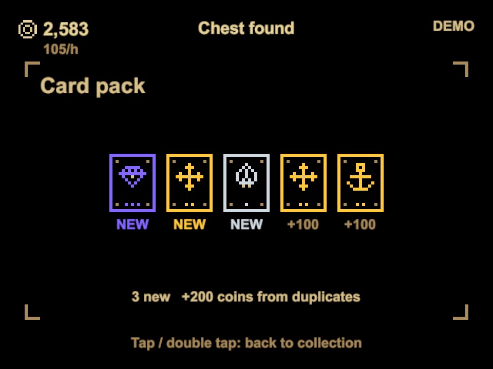
V2-4 Settings: second Reset confirmation
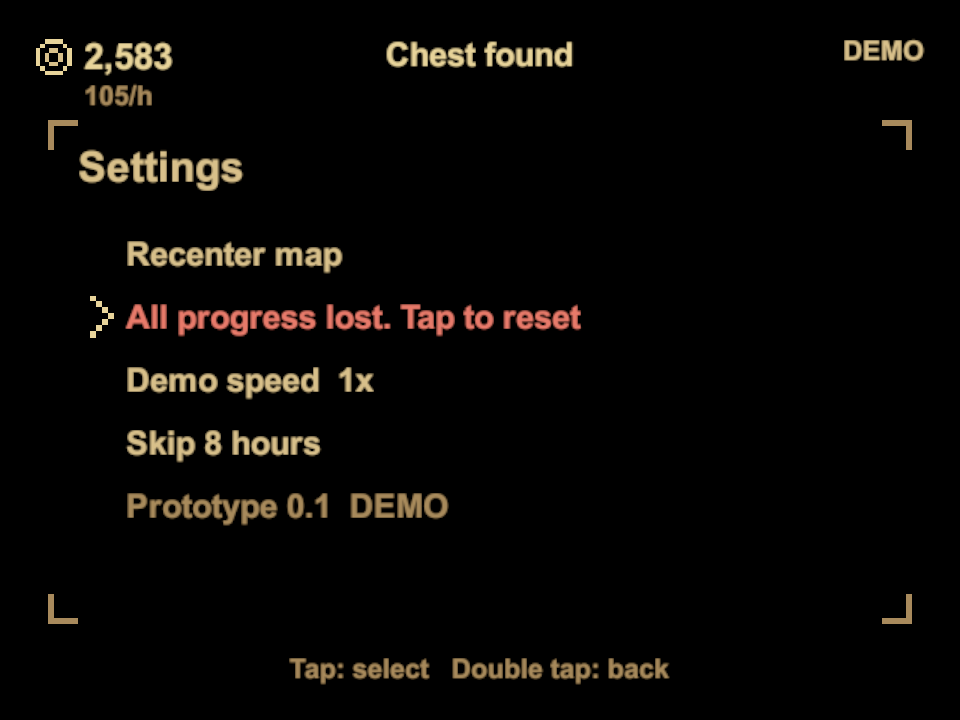
Onboarding chains demo steps 1–10; Game.unity is generated for the glasses (first in Build Settings); the first APK went on the glasses.
V3 screenshots (re-rendered from commit e7a5f9e, the first version on the glasses; tutorial shots from that version's automated test)
V3-1 Tutorial start: one hint line, no welcome card
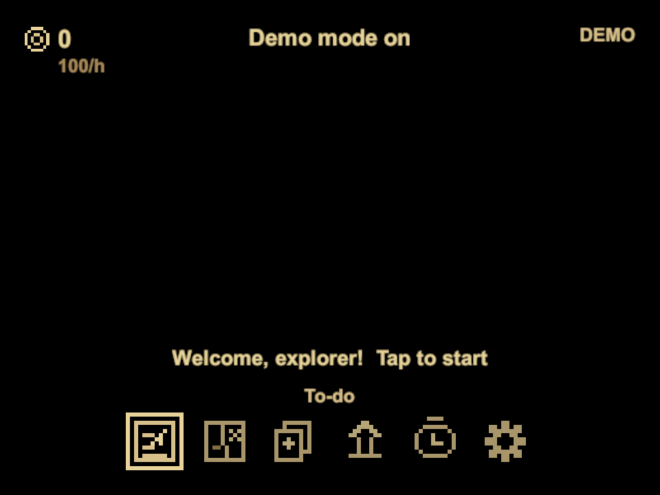
V3-2 Set anchor: one tap places it, no anchor UI (the main issue found in device test 3)
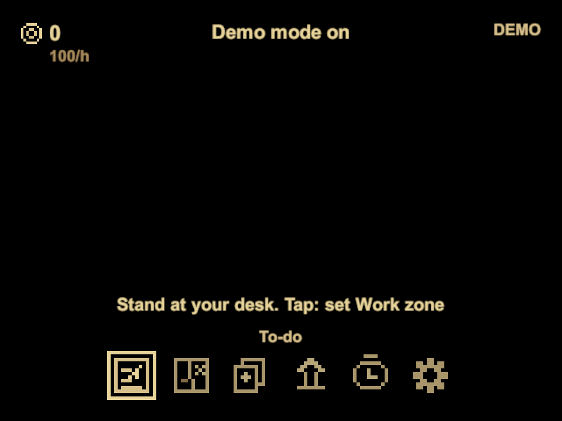
V3-3 To-do: the panel opens by itself

V3-4 Toolbar step
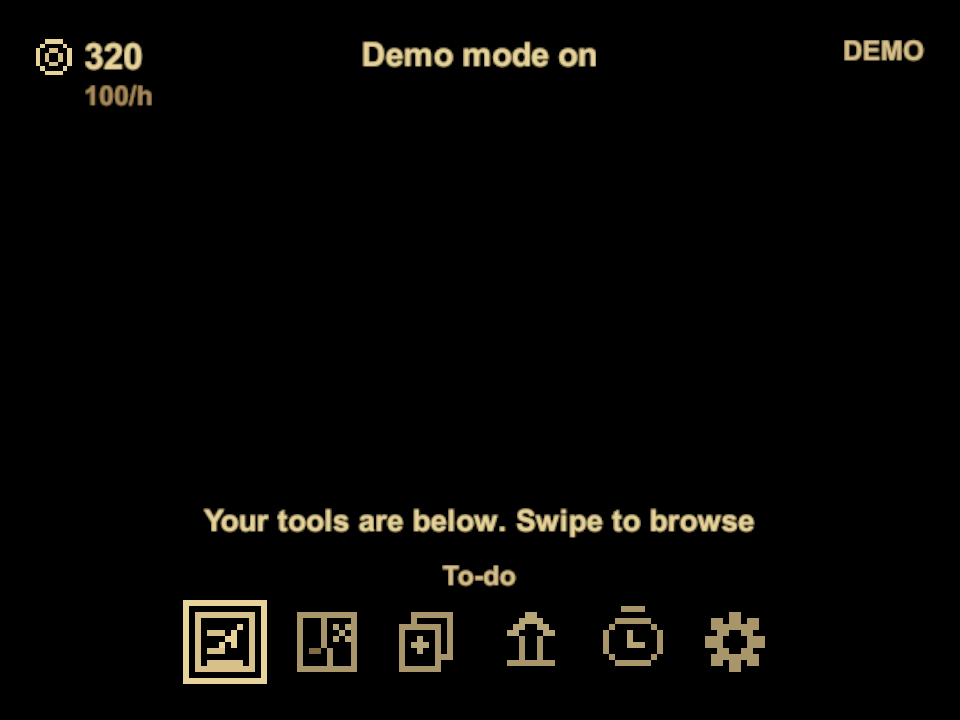
V3-5 Tutorial search: smaller map, hint under the map

V3-6 Tutorial chest appears

V3-7 Collection: the pack is opened here
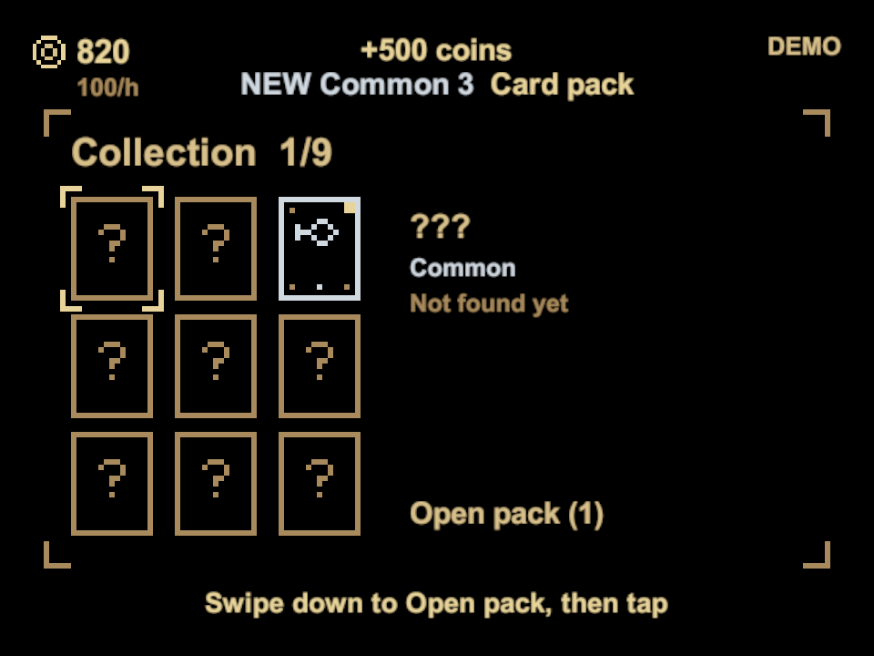
V3-8 Pack revealed

The versions between these tests were not committed one by one (they landed in one commit), so they cannot be re-rendered; the final look is in the last section.
Device test 1 → big rework (tested 15:36, new build 16:13)
| # | Finding | Change |
|---|---|---|
| 1 | No place to set several anchors | Anchors tool (diamond icon): 3 slots in three boxes, preset names + voice rename (text captured through the To-do voice flow, temporary todo deleted) |
| 2 | Icons too abstract | To-do = pen + notepad, Collection = chest |
| 3 | Zone todos not on the main view | Zone name + first 3 todos under the coins (it had been missed, not an anchor problem) |
| 4 | Upgrade should be an openable tool | Profile (character) panel |
| 5 | Map: progress on the main view, no Map tool, too high, arrow instead of text | Progress row bottom center; map follows the body (55° right, follows only after facing a new way); double arrow |
| 6 | Rename Focus timer | Pomodoro |
| 7 | Palette looks strange | RayNeo colors: cyan #4DE2FF, green #44FF66, gray-cyan #7FA8B8 |
| 8 | Collection should show progress per rarity first | Three-box overview (owned/18), 6×3 page per rarity; card pool grown to 54 |
Also: the onboarding hint said "Tap" after the focus moved away → it now follows the focus. 54 cards still use the 9-card draw values → economy re-tune pending. Renaming broke todo prefixes → rename now rewrites them with todoEdit.
Device test 2 → chest reward window (tested 16:14, new build 16:39)
| Finding | Change |
|---|---|
| Map still too high | About 8° below eye level |
| Chest rewards were one toast line; the pack had to be found in the Collection | Reward window: rewards appear one by one, tap the pack to open it in place (5 cards framed after it); map hidden while open |
| One swipe sometimes moved two steps (2 step events per swipe) | Repeat guard 0.12 s → 0.18 s |
| A save stopped at "open tutorial chest" after the chest was opened got stuck | Resume skips to the next step |
Device test 3 → Start screen and onboarding redo (tested 16:42, new build 17:05)
Main issue: setting the anchor "took me to To-do". The log showed one tap at 16:42:36 placed the anchor silently and opened the To-do panel at once.
| Finding | Change |
|---|---|
| Anchor step jumped to To-do | The step opens Anchors on slot 1: place, focus moves to Name to rename, continue only after closing; To-do no longer opens by itself |
| No Start | Every launch opens a Start screen: only Start and the coins |
| No offline earnings window | Earnings window before Start; then the coins show "before + gain" and count up |
| Not clear it is a tutorial | Green framed hint marked TUTORIAL k/12; blinking arrow over the toolbar icon; intro card |
| No end message | End card: Tutorial complete, have a great day |
| "Searching" sounds odd | Treasure hunt 42% |
Offline earnings now show 5 decimals (D4 said 10); logs keep 10.
Device test 4 → shop and Profile (tested 17:23)
After a Reset the full onboarding ran through (2 min 9 s, no errors). Three new requests and one bug from the log.
| Finding / request | Change |
|---|---|
| The HUD progress row hid with the HUD while looking at the map | The map has its own progress row above it; the HUD row hides while the map is in view |
| Need a way to spend coins | "Buy a pack 3,000 coins" under the Collection overview; the pack opens at once |
| Profile needs sections | Skills / Look / Pets; 4 outfits (incl. trousers and a long dress), 6 colors, 4 pets; some free, the rest bought with coins; the pet follows the explorer on the map |
Bug: renaming back and forth gave (Work)-(Study)-(Office)-(Study)-… | Rename strips the prefix with the OLD names first; stacked preset prefixes are cleaned when shown |
| Fact | Result | Meaning |
|---|---|---|
todoEdit rewrites a todo's text | Works | D3 (zone in the todo text) holds |
startTodo voice create in SLAM mode | Works, returns to the game, SLAM fine | Open question from 10-19 closed |
deleteTodo | Wired in (voice rename) | Not yet checked on device |
| One swipe = 2 step events | Usually < 40 ms apart, sometimes > 120 ms | Repeat guard 0.18 s |
| App stalls while the screen dozes | Fine after adb shell input keyevent KEYCODE_WAKEUP | Wake before testing |
| Device log buffer 64 KB | Flushed by system logs in seconds | Stream logcat to the PC during tests |
| Work zone entered right at launch | SLAM origin resets each launch; an anchor near the origin always hits | Does not prove anchors persist (test 3 still to do) |
deleteTodo), shop / Look / PetsScreenshots/)mainRendered in Unity at the glasses' 30° view; black = transparent. All screenshots are archived in the working folder: Screenshots/2026-11-07/ (latest), v1-parchment-hud-map/, v2-panels/, v3-onboarding-first-apk/.
1. Offline earnings window (shown first at launch; this shot still has 10 decimals, now 5)
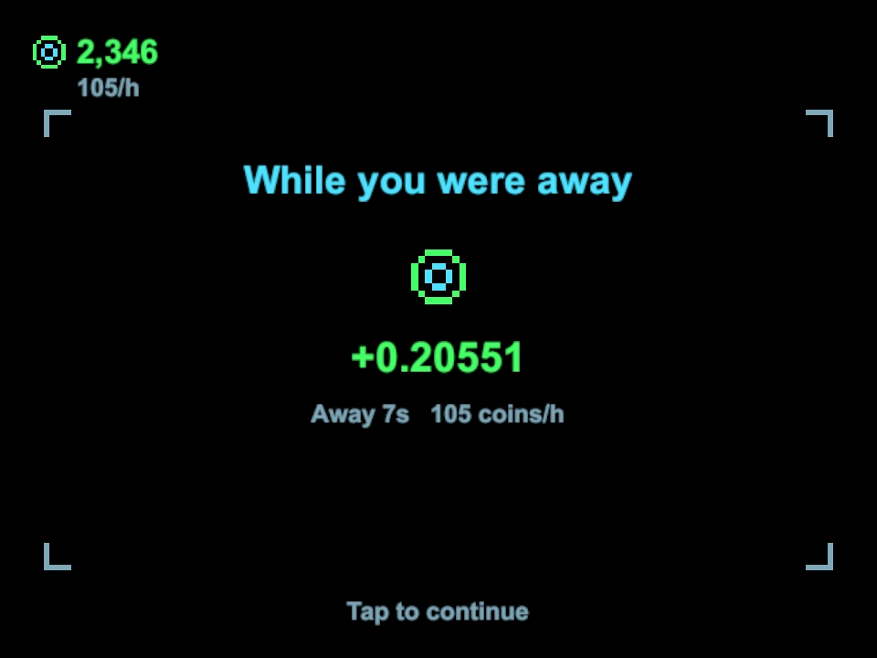
2. Start screen (coins first show "before + gain")
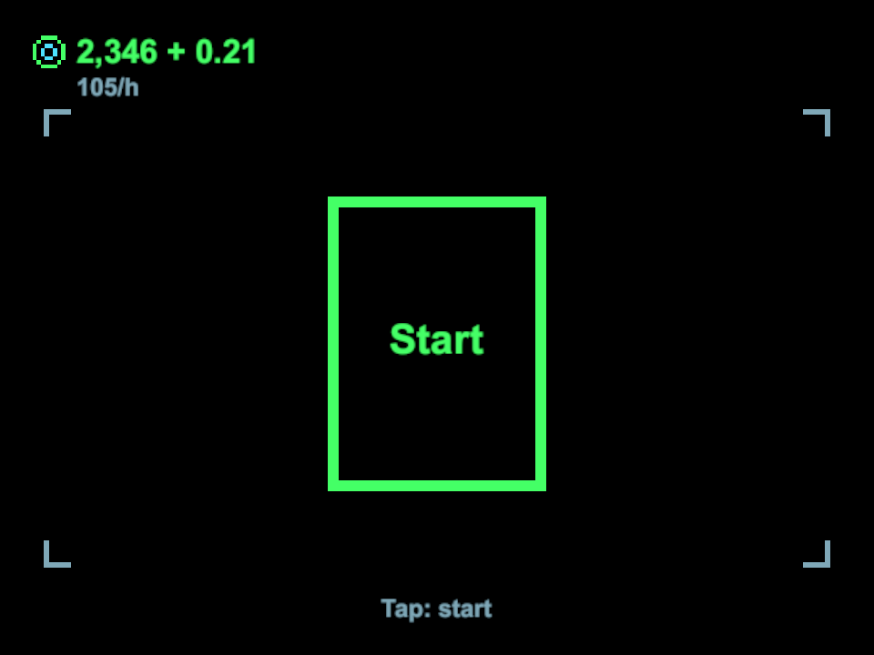
3. Tutorial intro card
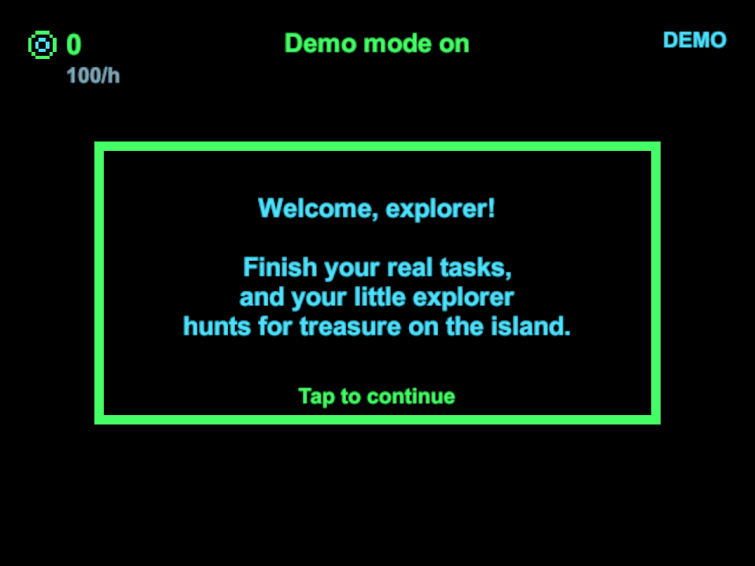
4. Tutorial: anchor step (TUTORIAL 4/12)

5. Tutorial: arrow over the To-do icon

6. Main HUD (zone todos, Treasure hunt progress, look-right double arrow, new toolbar)
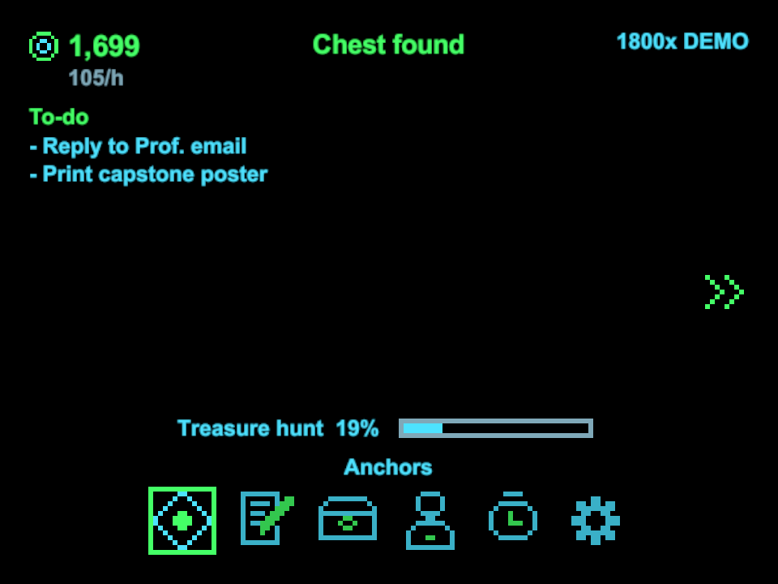
7. Treasure map (follows the body, below eye level; progress row above the map)
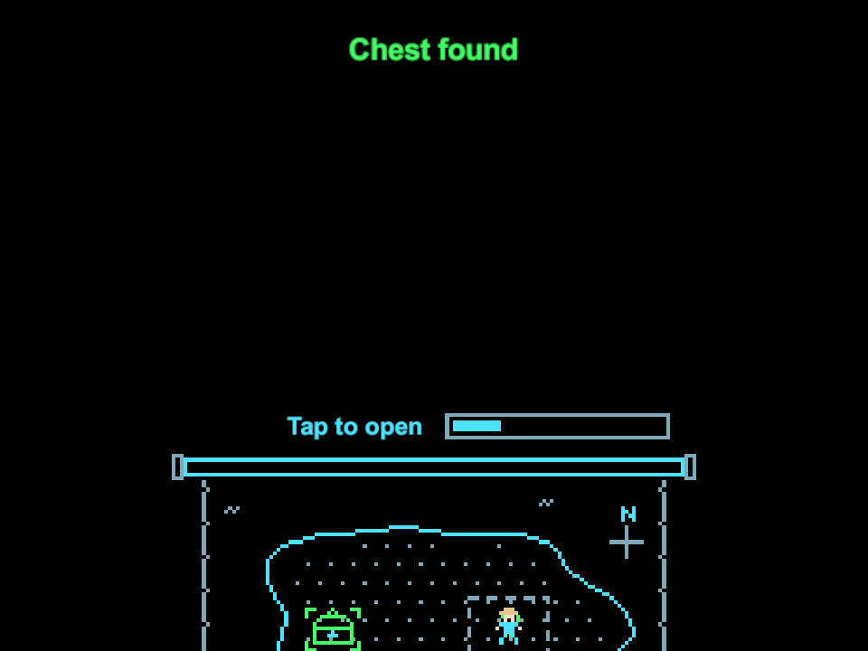
8. Chest reward window
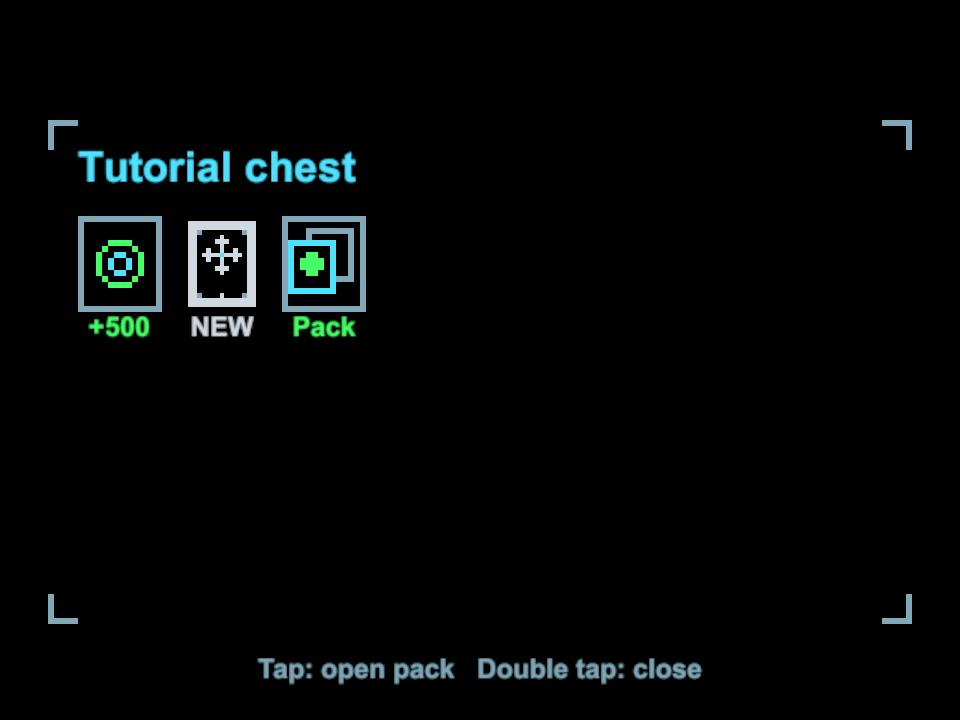
9. Pack opened in the reward window

10. Anchors panel
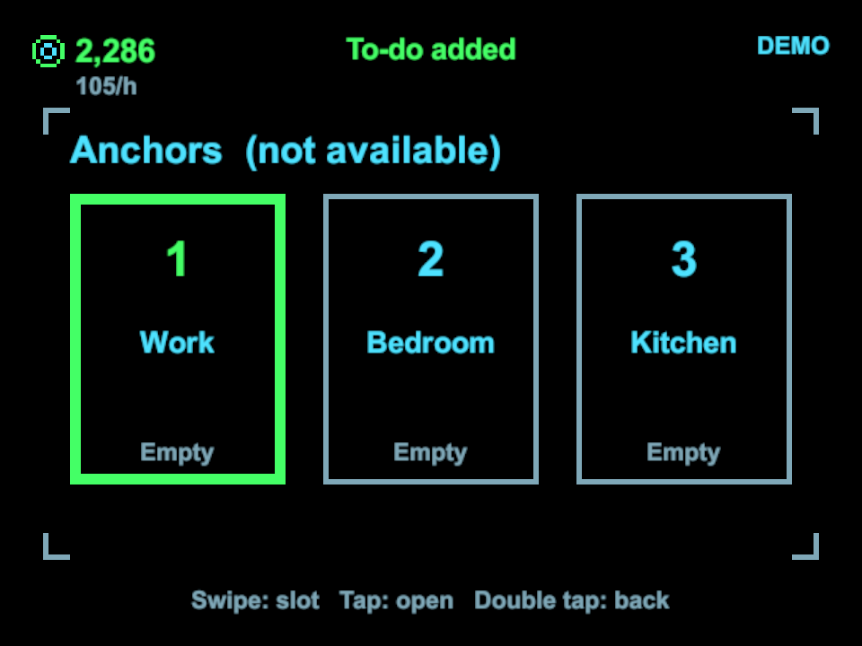
11. Collection overview + Buy a pack
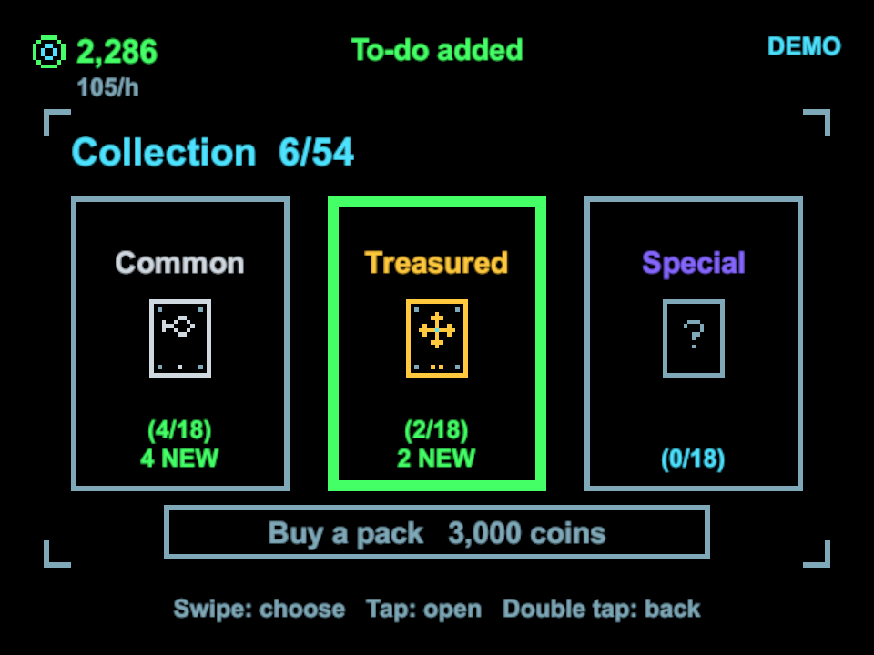
12. Collection: Treasured page 6×3
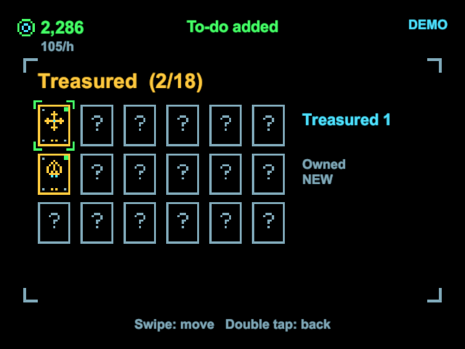
13. Profile overview

14. Profile: Look
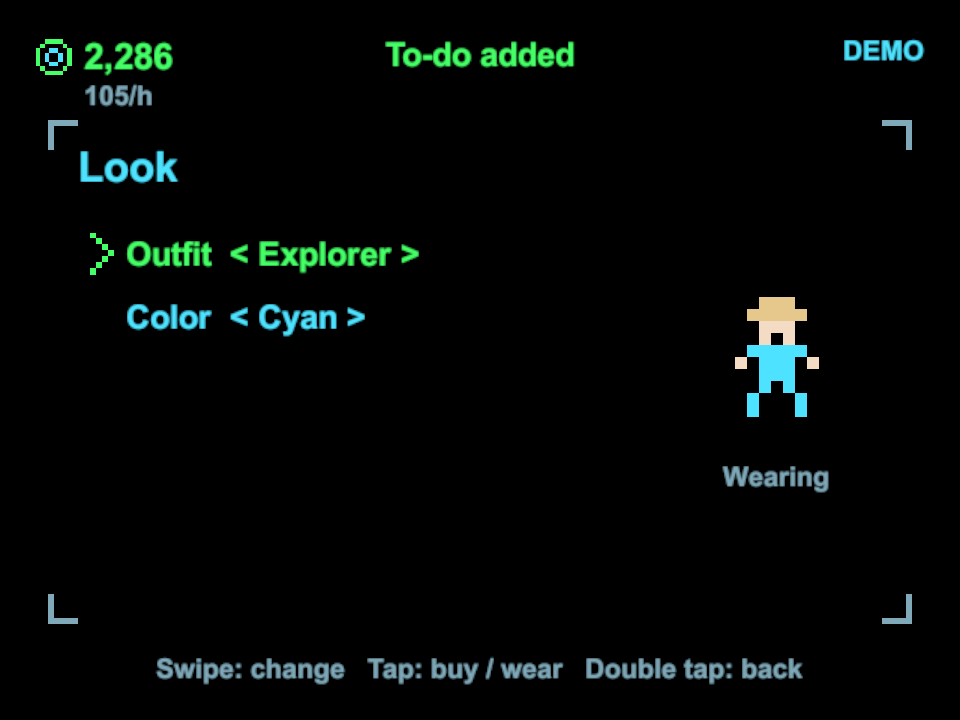
15. Profile: Pets
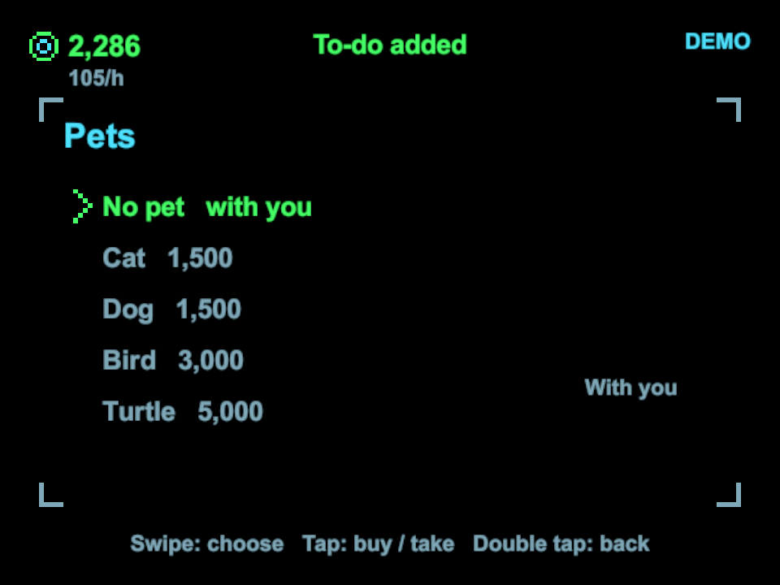
16. Tutorial end card